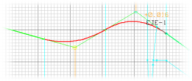
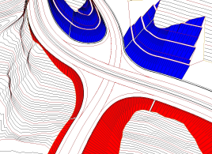
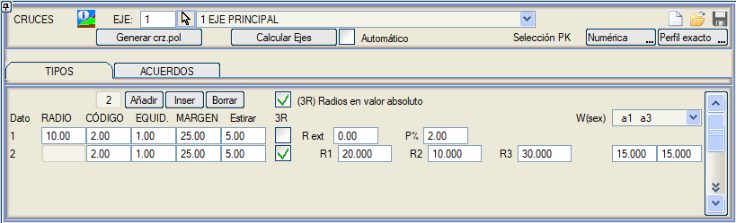
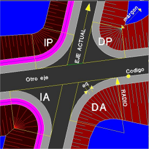
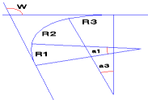
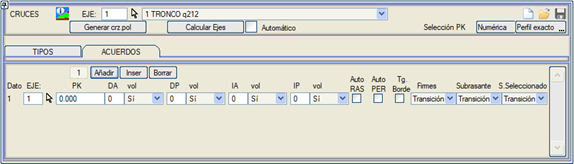
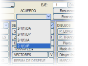
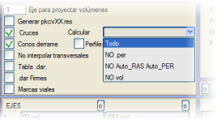

Genel Bilgiler
Bu menü, hemzemin kavşaklardaki eksenler arası bağlantı geometrisini hızlı ve etkili bir şekilde tanımlamak için kullanılır.
İki eksen arasındaki kavşaklar, daha az öneme sahip olan eksen üzerinde tanımlanır ve veriler .vol dosyasında saklanır.
Bu yardımcı program, bir eksenin diğerinin 'üzerinden geçmesi' için gerekli verileri hesaplar ve kot geçişinin doğru olması için gerekli içbükey-dışbükey kesimleri kırmızı kota ekler.
Program ayrıca, iki eksenin platformlarının tam olarak birleşmesi için gerekli deverleri de hesaplar.
Ayrıca,
banket veya trotuar gibi her eksende tanımlanan enkesit elemanlarının doğru bir şekilde enterpolasyonu için gerekli tüm hesaplamalar yapılır.
Program, boyuna hatta göre tanımlanmış hendeklere sahip eksenler arasındaki kavşakları hesaplayabilir. Kavşak kollarının hendeği için boyuna hat, başlangıç ve bitişte eksenlerin hendek kotlarını alan tek bir kırmızı kot ile oluşturulur. Hem ana eksenin hem de bağlandığımız eksenin hendeklerinin boyuna hatta göre tanımlanmış olması gerekir. Aynı şekilde, bu durum kafa hendekleri için de geçerlidir.
Eğer bağlantı kolunun çıktığı eksende Yarma veya Dolgu için Alternatif Tip Kesit tanımlanmışsa, bu Tip Kesit bağlantı kolu ekseni tarafından miras alınır.
Üstyapı paketleri, geometrik anlayış açısından benzer olmalıdır, aksi takdirde doğru bir şekilde yorumlanmaları mümkün değildir.
Kavşakların tanımı iki alt menüde yapılır. İlk olarak, kullanılacak olan bir bağlantıyı tanımlayan tüm olası parametre kombinasyonlarını (yarıçap,...) içeren bir dizi tipin tanımlandığı TİPLER menüsünde.
Eksenler arası BAĞLANTILAR menüsünde, iki eksen arasındaki her bir kavşağın sahip olabileceği dört olası bağlantıdan her birinde kullanılacak tipler tanımlanır (her eksen çiftinin birden fazla kavşağı olabilir).
Bağlantıların hesaplanmasından önce tanımlanmış olan sınır çizgileri, sınır çizgisinde tanımlanan tarafa göre budanır; eğer bağlantı kolu ekseni ana eksene ters yönde ise, o zaman ters taraftan budanacaktır (DA ve DP bağlantıları aynı taraftan, IA ve IP bağlantıları ise ters taraftan).
Not: Kesişen eksen, ana ekseni kesmeye ulaşmadığında, kavşak tanım kilometresi, ana eksenin banketini geçmiş bir değer olarak verilmelidir.
Bağlantı Tiplerinin Tanımlanması
İlk aşamada, bağlantı tiplerinin sahip olacağı özellikler tanımlanır, daha sonra her olası bağlantıya kendi tipi atanır. Diyalog kutusu aşağıdaki gibidir:

Model, iki eksen arasındaki dört olası bağlantıyı tanımlamayı sağlayan sol-sağ, önceki ve sonraki kodlamayı açıklar.
Her kavşakta dört olası bağlantı vardır:
DA
|
Mevcut eksenin sağ tarafında, diğer ekseni kesmeden önceki bağlantı (Sağ-Önceki). |
IA
|
Mevcut eksenin sol tarafında, diğer ekseni kesmeden önceki bağlantı (Sol-Önceki). |
DP
|
Mevcut eksenin sağ tarafında, diğer ekseni kestikten sonraki bağlantı (Sağ-Sonraki). |
IP
|
Mevcut eksenin sol tarafında, diğer ekseni kestikten sonraki bağlantı (Sol-Sonraki). |
Girilecek değerler şunlardır:
- Yarıçap(lar): Program, her bağlantı için burada belirtilen yarıçapa sahip dairesel bir güzergahtan oluşan bir eksen oluşturur.
Eğer 3R kutucuğu işaretlenirse, bağlantı üç merkezli olacaktır. Bu tip aşağıdaki parametrelerle tanımlanır:
- Kavşak açısına bağlı olarak merkezi yarıçap.
- Yarıçap oranı R1:R2:R3. Varsayılan değer 2:1:3'tür.
- Yan yarıçapların açıları a1 ve a3 (eğer a1+a3 mevcut açıdan büyükse, sadece merkezi yarıçap kullanılacaktır) veya merkezi dairenin geri çekilmesi.
Bu bağlantı tipi sadece şu durumlarda kullanılabilir:
-
Düz eksenler arasındaki kavşaklar için, yani kavşak bölgesindeki güzergahlar düz olmalıdır.
- Kesişen eksenin kaplama kenarında doğrusal bir değişime sahip olduğu, böylece bu kenarın eksene paralel olmayan bir doğruyu takip ettiği durumlarda.
Aksi takdirde sadece merkezi yarıçap kullanılacaktır.
- Kod: Bağlantı kolu ekseninin hangi enkesit noktasına teğet olduğunu belirtir. Bu değer varsayılan olarak kod 2'ye (kaplama kenarı) karşılık gelir. Kodların 2, 11, 12 ve 13 olarak değiştirilmesine izin verilir. Örneğin kod 11'i kullanırsak, ilk banketin ana platformun uzantısında olması gerekir, vb.
- Adım Aralığı: Bağlantı kolu eksenine dik enkesit almak için maksimum adım aralığıdır. Yarıçap ne kadar küçükse, adım aralığı o kadar küçük olmalıdır. Programın, enkesit alma tablosunun yapılandırmasına göre, bant yarı genişliği ile ve haritaya karşı veya üçgenleme yaparak enkesit alacağı dikkate alınmalıdır.
- Marj: Yarma ve dolgu şev eteklerinin mesafesi bağlantı kolu yarıçapından büyükse, programın ilgili iki eksenin şevlerinin kesiştiği ve bağlantı kolu merkezinin arkasında bir sınır çizgisi belirlemesi için bir marj verilir.
- Uzat: Marja göre hesaplanan sınır çizgisinin son segmenti, burada belirtilen uzunluk kadar "uzatılabilir".
Her bir enkesit elemanının farklı yarıçaplarının hesaplanması için aşağıdaki hususlar dikkate alınmalıdır:
- Bağlantı kolu eksenini hesaplamak için referans alınan kod.
- Trotuarlı eksenler arasındaki kavşaklar için, program trotuarların dış kenarları için bir dış bağlantı yarıçapı tanımlama imkanı sunar. İki eksenin trotuarları farklı genişlikte olduğunda bu yarıçapı tanımlamak kullanışlıdır (eğer trotuarların D2'de tanımlanmış bir genişlik değeri varsa ve D3 genişliği sıfıra eşitse, D2 değerini D3'e geçirmek önerilir).
- Banket genişliklerinin bağlantı kolu yarıçapından büyük olduğu kavşaklarda, bağlantı kollarının banketlerinin deveri, bağlantı kolu eksenini oluşturan yayın merkezinde kesişen banket kenarlarında tek bir kot elde etmek için değiştirilir. Bu kot, kesişen iki eksene karşılık gelen kotların ortalamasıdır.
- Banket genişliklerinin bağlantı kolu yarıçapından büyük olduğu ve bağlantı kolunun her iki uçtan banketlerin dış kenarlarının kesiştiği noktaya kadar uzatıldığı küçük yarıçaplı kavşaklar için, % cinsinden bir göreceli eğim (P%) verilebilir. Böylece, kesişim noktasında iki kenarın kotu farklıysa, ortalama bir kot atanır ve bağlantı kolu ekseni her iki taraftan L = 100 × dZ / P% kadar uzatılır ve bu uzunluk boyunca ilgili eksendeki kenar kotuna ulaşılır.
- Geniş trotuar genişliklerine ve kendi bağlantı yarıçapına sahip bağlantılarda, normal genişlik düzeltmesi otomatik olarak etkinleştirilir.
Bağlantıların Kullanımı: Kavşakların Tanımlanması ve Dever ile Kırmızı Kotun Otomatik Ayarlanması
Belki de en önemli verisi bağlantıyı tanımlayan yarıçap olan bağlantı tipleri tanımlandıktan sonra, mevcut eksenin her bir kavşağında bağlantıların kullanımı beyan edilir.

Bağlantıların tali eksen üzerinde tanımlanması tavsiye edilir, çünkü bu eksenin kırmızı kot ve dever verileri, 'aynı seviyeden geçmesini' sağlamak ve araçların zıplamasını veya normal seyrini tehlikeye atmasını önlemek için değiştirilecektir.
Kavşakların hesaplanmasından sonra elde edilen veriler, veri kopyalama/kaydetme veya paylaşma sırasında dikkate alınması gereken crz adlı bir alt klasörde saklanır.
Program tarafından farklı bağlantılar için hesaplanan kesitler, dayandıkları eksenlerin kesitleri arasında bir doğrusal enterpolasyon yapmanın sonucudur; yardımcı platformların enterpolasyonu hariç, bu durumda bir parabolik geçiş yapılır.
Üstyapılar seçeneği üç değer sunar:
- İki eksenin kesitleri arasında bağlantı kolunda geçiş.
- Mevcut eksenin kesitini kullan.
- Diğer eksenin kesitini kullan.
Tesviye Yüzeyi seçeneği, tesviye yüzeyinin minimum kalınlığını kontrol etmeyi sağlar ve aynı üç seçeneğe sahiptir:
- Geçiş
- Mevcut Eksen
- Diğer Eksen.
Seçme Malzeme: Seçme Malzemeleri, üstyapıya benzer şekilde Bağlantı Kollarına dahil etme modu. Ayrıca 3 seçenek sunar:
- Geçiş
- Mevcut Eksen
- Diğer Eksen.
 | Eğer bağlantı kolunun çıktığı ve ulaştığı eksenlerin sondaj verilerinden (V, I, R, vb.) herhangi birinde farklı derinlikler varsa, o zaman bağlantı kolu ekseninde bir sondajdan diğerine geçiş, bağımsız sondajlar olarak tanımlanır.
|
Aşağıda diyalog kutusunda bulunan girdilerin anlamı açıklanmaktadır:
| EKSEN |
Mevcut eksenin kesiştiği eksenin numarası. |
 | Ekseni ekranda tıklayarak grafik olarak seçmeyi sağlar. |
| KM |
Mevcut eksen üzerindeki yaklaşık kavşak kilometresi. İki eksenin birden çok kez kesişme olasılığını ayırt etmeye yarar. Eğer mevcut eksen, diğer ekseni kesmeden ondan çıkan veya ona ulaşan bir rampa ise, mevcut eksenin başlangıç veya bitiş kilometresi verilebilir.
Her bir DA, IA, DP, IP'ye karşılık gelen kutucuğa 0 konulursa, ilgili bağlantının yapılmayacağını gösterir. 0'dan farklı bir sayı, kullanılacak olan bağlantı TİPİNİ belirtir.
|
| Vol |
Her bir bağlantının (DA, DP, IA, IP) numarasının yanında, vol sütununda varsayılan olarak Evet seçeneği seçilidir, böylece program kavşak her hesaplandığında bağlantının .vol dosyasını yeniden oluşturur. Eğer Hayır seçeneği seçilirse, program bağlantıyı hesaplarken önceden bir .vol dosyası varsa onu kullanır ve yeniden oluşturmaz.
Bu, kullanıcının DÜŞEY GÜZERGAH kayan penceresinden (BAĞLANTI açılır tuşu) her bir bağlantının .vol dosyasını yüklemesine ve kırmızı kot, dever, tip kesitler vb. verilerini değiştirip değişiklikleri kaydetmesine olanak tanır. Bu şekilde ve bu düğme devre dışı bırakıldığında, yeni bir kavşak hesaplaması, kullanıcı tarafından değiştirilen .vol dosyasını kullanır ve yeni bir tane türetmez.
Düzenlenmek istenen bağlantının seçimi, yazıldıkları sistem dikkate alınırsa çok basittir. Örneğin, ilk eleman 2-1(1).DA, 2. Eksen ile 1. Eksen, birinci kavşak, sağ-önceki anlamına gelir.
Bu düzenlemenin, projenin eksen sayısının n olduğu varsayılarak, geçici bir n+1 ekseni oluşturularak yapıldığı ve bu eksene yalnızca o anda erişilebildiği dikkate alınmalıdır.
Bununla, bağlantının kırmızı kotları ve diğer tanım verileri analiz edilebilir, planı çizilebilir veya (G) seçeneğine sahip olan RAPORLAR menüsünden herhangi bir rapor oluşturulabilir.
| Bu geçici olarak yüklenen eksen, Düşey Güzergah menüsünden yeniden hesaplanmamalıdır, çünkü o zaman oluşturulacak olan ISPOL#.per dosyası uygun şekilde budanmış olmayacaktır. |
Eğer Kkot Yok seçeneği seçilirse, bağlantı mevcut kırmızı kotu korur ancak geri kalanını (deverler, vb.) değiştirir.
|
Oto_KKOT
|
Bu seçenek etkinleştirilirse, proje hesaplaması yapılırken program, eksenin kırmızı kotlarını değiştirir ve giriş bağlantıları bölgesinde iki parabol ve çıkış bağlantıları bölgesinde iki parabol aracılığıyla bir geçiş yapar. Orta bölgede, başlangıç kırmızı kotu ile bitiş kırmızı kotunu bir veya iki parabolik düşey kurp ile birleştirir. Bu işlemler, eksenin tanımlı kırmızı kotlarından, kesişen eksenin platformunun zorunlu kıldığı kırmızı kota geçmek için yapılır. Ardından, değişikliklerle birlikte .vol dosyası otomatik olarak kaydedilir.
|
Bu seçenek, kavşağı tanımlayan eksenin, dönme ekseninin plan ekseniyle çakıştığı bir karayolu olduğu durumlarda ve dönme ekseninin plan eksenine taşındığı tek kırmızı kotlu otoyollarda çalışır. |
|
Oto_DEVER
|
Bu seçenek etkinleştirilirse, proje hesaplaması yapılırken program, bağlantı kolu bölgesinde bir geçiş yaparak eksenin deverlerini değiştirir, böylece platform kenarı, kesiştiği eksenin platform kenarıyla aynı kota gelir.
Bu seçeneği, bağlantı kollarının deverlerinden ayırt etmek gerekir. Bağlantı kollarının deverleri şu şekilde belirlenir:
- Bağlantı kolu ekseninin her bir kilometresi için, enkesit, kavşağın iki ekseninden birinin platform kenarını kesene kadar uzatılır. O noktada, o eksenin deveri ve kırmızı kotu tarafından oluşturulan düzlem belirlenir.
- Daha sonra, bağlantı koluna, enkesitindeki platformun o düzlemden geçeceği şekilde bir dever atanır. Algoritma, KAVŞAKLAR'daki gibi çalışır.
|
Kenara Teğet
|
Bağlantı kolu ekseninin, ana eksenin kenarına teğet olmasını sağlar ve dolayısıyla ana ekseninkinden farklı bir azimuta sahip olur. Genişliğin, bağlantı kolu ekseninin teğet olduğu bölgede değişken olduğu eksenler için kullanılır.
|
Üstyapılar
|
Bağlantı kolunda, bağlantıyı tanımlayan eksenin Üstyapı Kesitini korur (Geçiş yapılmaz).
|
Eksenleri Hesapla
|
Eksenleri Hesapla aracını kullanmak için Proje'nin BRL kutucuğunu etkinleştirmek gerekmez.
|
|
Eğer Oto_KKOT veya Oto_DEVER seçeneği etkinleştirilirse, otomatik değişiklikler kabul edilmezse diye önceden eksenin .vol dosyasının bir kopyasını almak tavsiye edilir.
|
| Eğer bağlantı kolunun başladığı eksen kilometresinde kilometreye göre tanımlanmış bordürler varsa, bunlar bağlantı kolunun tip kesitine aktarılır.
|
Kavşakların Hesaplanması
Kavşaklar ilk kez hesaplandığında, programın ihtiyaç duyduğu arazi enkesitlerini alabilmesi için haritanın mevcut olması gerekir. Bunun için arazinin YÜZEYİ'nin de tanımlanmış olması gerekir. Kullandığı bant yarı genişliği, enkesit alma menüsünde tanımlanan değerdir ve eğer üçgenlemeden enkesit alma etkinleştirilmişse, burada da kullanılır. Devre dışı bırakılmış gruplara ait eksenlerin bağlantı kolları hesaplanmayacaktır.
PROJE menüsündeki Kavşaklar seçeneği, [Hesapla] seçeneğine basıldığında programın tanımlanan kavşakları oluşturması, ilgili eksenleri budaması ve eksenlerin ve kavşakların plan çizimini yapması için etkinleştirilmiş olmalıdır. Ayrıca [HES], [BRL], [ALN] ve [YAP] seçenekleri de aktif olmalı ve bir çizim stili tanımlanmış olmalıdır.
Kavşakların dört hesaplama modu vardır:
- Tümünü Hesapla. Bu durumda, bir harita veya bir TTP'nin yüklü olduğu ve dolayısıyla kavşak bağlantılarının enkesitlerinin alınabileceği kontrol edilir.
- .per YOK (yeni arazi enkesitleri alma): Kavşaklar hesaplanırken, program bağlantı kollarının enkesitlerinin daha önce oluşturulup oluşturulmadığını arar. Eğer enkesit dosyası crz dizininde zaten mevcutsa, bu dosya kullanılır; yoksa haritadan yeniden oluşturulmaya çalışılır. Bu seçenek etkinken ve kavşaklar daha önce hesaplanmışsa, kavşakların hesaplanması için haritanın mevcut olması gerekmez, bu da projenin genel hesaplamasını hızlandırır.
- Oto_Kkot Oto_Dever YOK: .per YOK seçeneğini içerir, ayrıca kırmızı kotun ve deverlerin otomatik ayarlanması seçeneklerini engelleyerek kavşağı tanımlayan eksenin .vol dosyasını değiştirmez.
-
.vol YOK: Oto_Kkot Oto_Dever YOK seçeneğini içerir ve ayrıca kavşak bağlantılarının .vol dosyalarını yeniden hesaplamaz.
Her bir bağlantı kolu ekseninin düşey güzergahı, mevcut eksenin ve diğer eksenin kırmızı kotunu kendi deverlerini takip ederek, bağlantı kolu ekseninin başında ve sonunda, ortada bir geçiş bölgesi ile projelendirilerek hesaplanır.
Bağlantı bölgelerinde, ilgili eksenlerde tip kesitin C (hendekler), D (yarma), T (Dolgu) ve/veya V (Sabit platform vektörleri,...) alt kesimlerine göre tanımlanmasına izin verilir. Ancak, genel kesimlere ayırma kullanıldığında olduğu gibi, bağlantıların teğet noktaları tip kesit geçiş bölgelerinde olmamalıdır.
Bağlantıyı tanımlayan eksenin, bağlantı bölgesinde başlayan veya biten bir sanat yapısı tanımlanmışsa, artık bağlantı eksenlerinde iki hesaplama kesimi görünür: biri sanat yapısı bölgesinde, diğeri dolgu bölgesinde, her biri ilgili Tip Kesit ile.
Metraj ile birlikte, üstyapı paketleri ve seçme malzeme tanımı da hesaplanır ve bunların metrajı her bir bağlantı kolunun eksenlerine entegre edilir. Bağlantı kollarının metrajları, kavşak beyan eden her eksen için, hacim listesinin (cvol#.res, # eksen numarasıdır) sonunda, özetten hemen önce yer alır ve bu hacimler toplama eklenir:
PROJE
: Kavşak
EKSEN: 2: Tali eksen
====================================================
* * * KAVŞAK BAĞLANTI KOLLARININ METRAJLARI * * *
* * * Dengelemiş mesafelere göre metraj * * *
====================================================
KM EKSEN
BK MALZEME KISMİ HACİM MALZEME KISMİ HACİM
------------- --- --
--------------- ------------ --------------- ------------
76.000 1
DA
ÜSTYAPI
76.11
ZAYIF ZEMİN 53.27
Y_ZEMİN
125.17
BİTKİSEL 43.54
DOLGU 6.67
76.000 1
IA
ÜSTYAPI
126.37
ZAYIF ZEMİN 108.27
Y_ZEMİN
642.55
BİTKİSEL 88.59
126.000 1
DP
ÜSTYAPI
168.94
ZAYIF ZEMİN 139.96
BİTKİSEL
111.97
DOLGU 1118.90
126.000 1
IP
ÜSTYAPI
99.45
ZAYIF ZEMİN 67.85
Y_ZEMİN
0.05
BİTKİSEL 54.33
Kavşak ve dönel kavşak bağlantı kollarını içeren projelerde, cvol.res, cv.res ve cv.xlsx raporları her bir bağlantı kolunun adıyla birlikte oluşturulur, örneğin:
- cv_3-2(1004)_DP.xlsx : Eksen 3'ün Dönel Kavşaklar verisinin 4. satırında tanımlanan Eksen 3 ile 2 arasındaki Dönel Kavşak Sağ_Sonraki bağlantı kolu.
- cvol_5-7(2)_DA.res : Eksen 5'in Kavşaklar verisinin 2. satırında tanımlanan Eksen 5 ile 7 arasındaki Sağ_Önceki kavşak bağlantı kolu.
cvol.res ve cv.res dosyaları, eksenler hesaplandığında ve yeniden metrajlandırıldığında oluşturulur; cv.xlsx için Raporlar'da seçeneğin etkinleştirilmiş olması gerekir.
Kavşaklı ve üstyapı paketli bir proje hesaplandığında, her bir bağlantı kolu için cv'lere benzer şekilde, örn: fi7-1(1001)_DA.res (ve fi_7-1(1001)_DA.xlsx) raporları da oluşturulur.
Plandaki eksen tanım dosyaları (.cej), düşey güzergah (.vol), enkesitler (.per) ve kavşakların oluşturulması için gerekli diğer tüm veriler, çalışma dizininin altında bulunan crz adlı bir alt dizinde saklanır.

|
Sadece iki eksenin kavşağını hesaplamak için bir seçenek, bunları geçici olarak bağımsız bir gruba yerleştirmek ve diğer grupları devre dışı bırakmaktır. Bu şekilde, sadece aktif gruplardaki eksenlerin kavşakları hesaplanacaktır. Bu küçük hile, bir kavşak için tanımlanan verilerin doğru olup olmadığını doğrulamaya olanak tanır.
|
Kavşak Kolu Eksenleriyle Proje Oluşturma
Kavşaklar menüsündeki [crz.pol Oluştur] düğmesi, farklı bağlantı kollarının tüm .cej dosyalarını tek bir dosyada gruplar ve crz klasöründeki tüm .per ve .vol dosyalarını yeniden numaralandırarak, çalışma dizininde crz.pol projesini oluşturur.
|